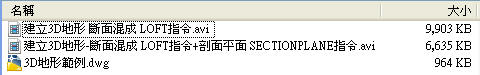

建立3D地形的方式因人而異，這裡提供一個簡單的方式跟大家分享，有其它方式也請您不另指教喔!
我的方式是先在2D畫好地形的斷面圖，如果依據等高線圖來話畫斷面會比較準確!
若沒有也可以隨時調整斷面，記得在3D空間中要以Z軸來上下拉伸調整。
斷面混成 LOFT指令:在多個斷面之間的空間內建立 3D 實體或曲面。
相關討論文章(感謝meet_emily):
http://autocad.bestoforum.net/forum-f16/topic-t3124.htm#22148
另外還可以依照需求將曲面增厚，範例中另外搭配 SECTIONPLANE指令，可以產生即時剖面，還可以建立2D或3D物件!
剖面平面 SECTIONPLANE指令:建立剖面物件，做為穿過 3D 物件的切面。
增厚 THICKEN指令:將曲面轉換為具有指定厚度的 3D 實體。
相關影片:[影片]建立剖面平面 SECTIONPLANE
https://www.autocad-tw.com/t4046-topic
*專屬會員朋友請到以下版區下載[檔案]建立3D地形 斷面混成 LOFT指令範例.zip

專屬資源下載: